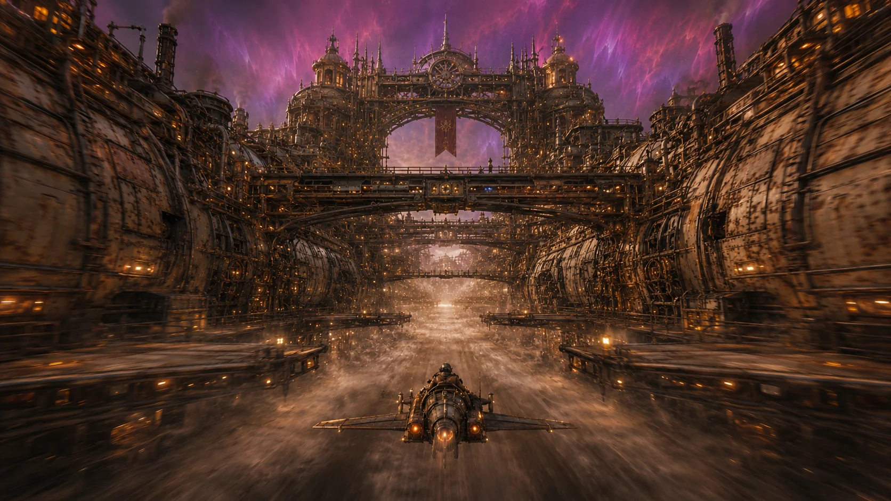
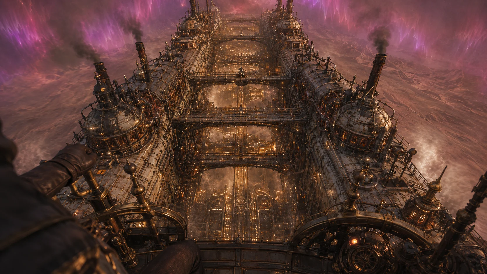
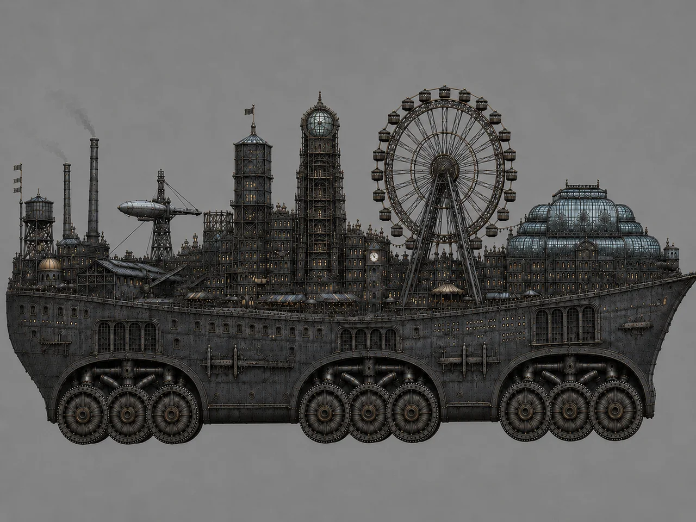
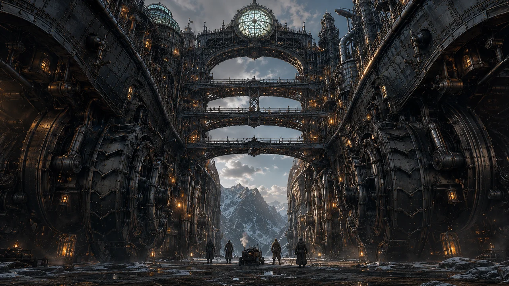

World of Cogheim / Grindwalker
Strider Class
Terrain domination through the straddle gap. Two hulls, one flywheel-lit chasm between them, and a whole class identity built around the fact that ridgelines, ravines, and ruins pass through a Grindwalker instead of stopping it.
No shipped MMO has a twin-hulled mobile fortress whose whole identity is straddling terrain — a walkable central span between two independently-crewed hulls, with the ground passing through the gap instead of blocking the walk. That gap isn't empty space. It's where the flywheel core lives, and it's the single most identifying silhouette on the disc.



Fourteen decks per hull — seven and seven, echoing a number that's already Grindwalker-loaded canon for reasons the Arch keeps sealed. Port and Starboard aren't mirror copies of each other. They're built for different lives entirely.
The working half of the hull. Transit spine: The Drive Line.
150 quarters, first-come assignment, one-room invariant.
The lived-in half of the hull. Transit spine: The Promenade Spin.
150 quarters, first-come assignment, one-room invariant. Deck S4 hosts the Tavern Halls.
Eight decks spanning between the hulls, stopping at deck 8 — below that is open air, the straddle gap itself, where the terrain actually passes through. The Spindle at A5 is the only lateral crossing between the two hulls. Everything that matters about who's in charge lives here.
The Commander's station. Upper tier, command of the whole hull.
The Engineer's station. The gyro-kinetic flywheel that powers the straddle-gap identity lives here.
The Gunner's station, at the base of the Arch.
What actually maintains the seven-year flywheel threshold hold is founder-sealed. This deck gates access and visibility only — the content itself is never spec'd here.
A forward-projecting causeway growing out of the straddle gap past both bows — and it does three jobs at once, not one. It's a phased breach objective (Outer Hangar Door, then Inner Blast Door, then the Hangar Floor itself — no skipping a phase). It's an underbelly garage, vehicles and watercraft launching from beneath the runway surface. And it's the docking interface for a Black-Maw Station.
Those last two facts sitting on the same structure is a genuinely open design thread, not something quietly resolved: docking and the breach point are the same place, which means a docked Grindwalker at a neutral station carries a real vulnerability that hasn't been fully worked out yet.

Everything above this line is real and locked. Everything below it is genuinely proposed, not promised.
Port and Starboard splitting industrial from social is already locked, but the texture of that split is wide open. Picture Port's Drive Line smelling like hot metal and machine oil the whole walk down, foundry glow leaking under sealed doors, while three decks over on Starboard the Promenade Spin runs warm light and the sound of Reggae drifting out of the Tavern Halls before you can even see the door. Two completely different ships, connected by one bridge across an open gap where the ground goes by underneath.
The Flywheel minigame at S4 is locked as a concept — roulette-style, tied to the ship's actual flywheel identity. What we haven't imagined yet: does watching it spin ever sync visually with the real flywheel turning in the Arch above, so a big win at the table has an actual echo in the ship's own heartbeat? That's the kind of detail worth chasing once the base system exists.
Speed, weak-spot damage profile, and full crew capacity will post here once they're actually locked and verified — not before.